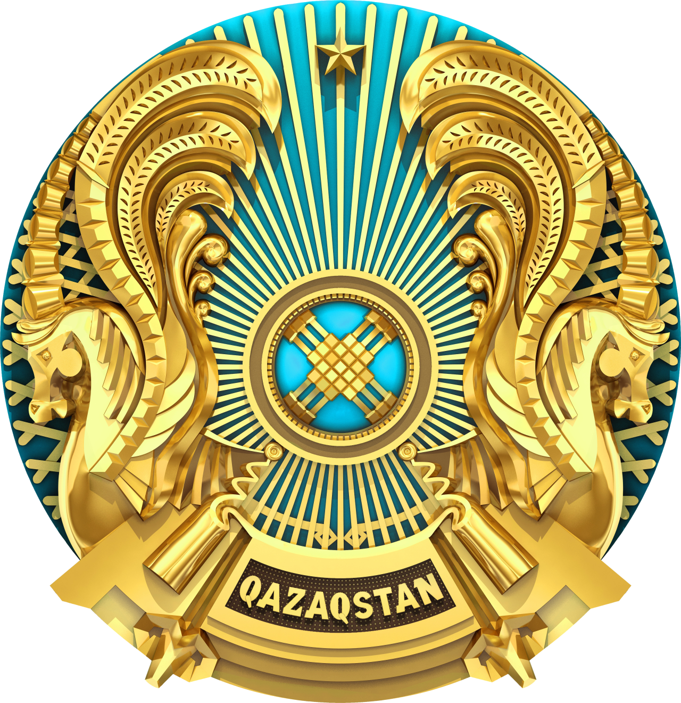

Казахстан
как национальный мир

Главная
О нас
Источники
Эпос
История
Природа
Писатели
Музыканты
Художники
Обычаи
Костюмы
Ценности
Область
Области:
Акмолинская
Актюбинская
Алматинская
Атырауская
Восточно-Казахстанская
Жамбылская
Западно-Казахстанская
Карагандинская
Костанайская
Кызылординская
Мангистауская
Павлодарская
Северо-Казахстанская
Туркестанская